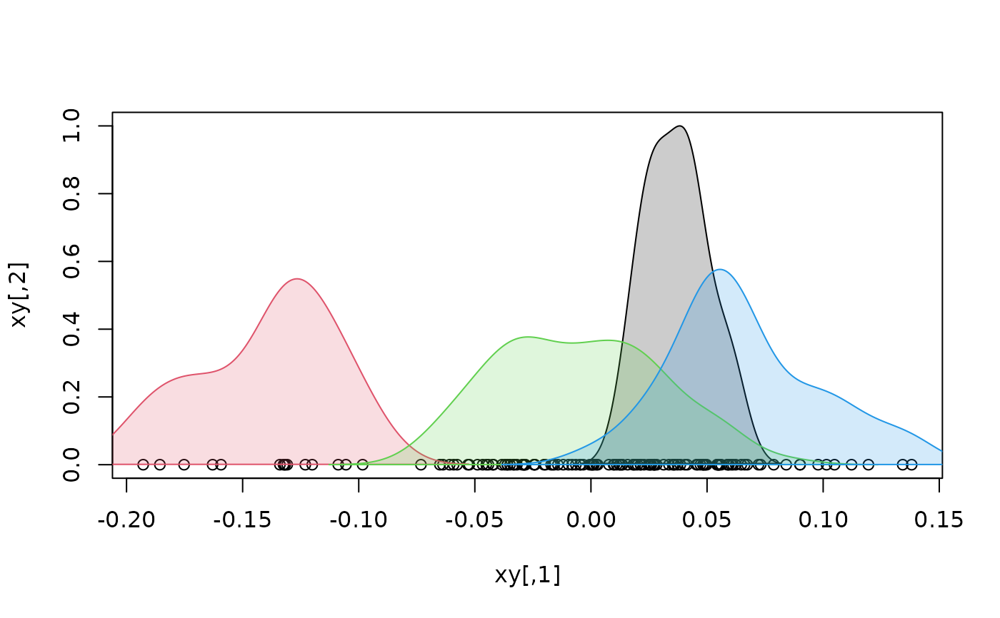

R/internal_builders.R
density_by_group_2D.RdPlot density distribution for different groups in "univariate" scatterplots. Used internally.
Coordinates of the scatterplot.
A factor grouping data points.
the axis of xy corresponding to the active variable.
Numeric; transparency factor for density distributions.
A vector indicating the width of line (integer) used to draw density distributions.
A vector indicating the type of line (integer) used to draw density distributions.
A vector (either character or numeric) indicating the colors used for each group.
#load Fourier data and necessary packages
library(geomorph)
data("shells")
shapes <- shells$shapes$coe
species <- shells$data$species
#perform PCA
pca <- prcomp(shapes)
#bind 1st axis with a column of 0s, plot and add density distributions
xy <- cbind(pca$x[,1], 0)
plot(xy, ylim = c(0,1))
density_by_group_2D(xy, fac = species, ax = 1)
